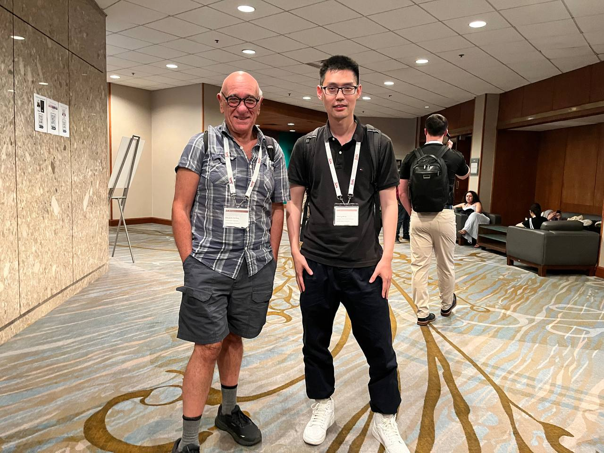

Two works were presented in July
Two conferences, ACC and ICML, were held in July. The work on a recently developed Zubov-Koopman operator for constructing Lyapunov functions and a PINN method for designing an optimal stabilizing controller were presented and gained significant attention.

A photo taken with Prof. Sontag at ACC 2024 in Toronto, Canada.
Prof. Sontga is renowned for his contributions to input-to-state stability (ISS) and control-Lyapunov functions, which are key stability theory concepts for nonlinear systems.